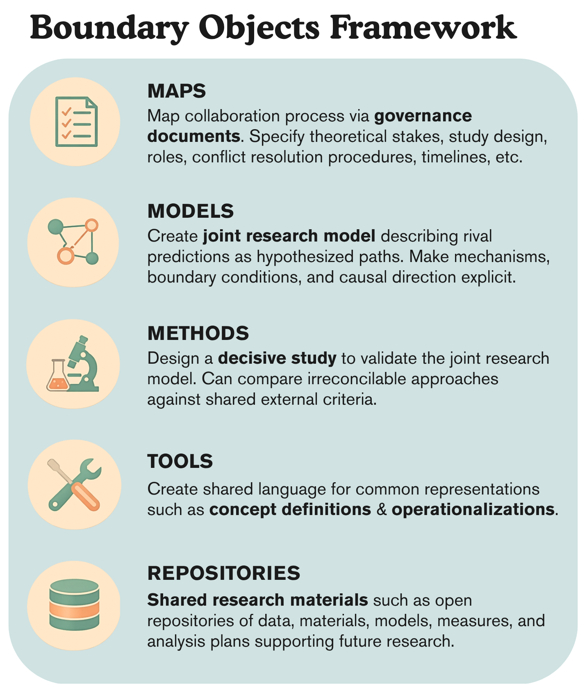
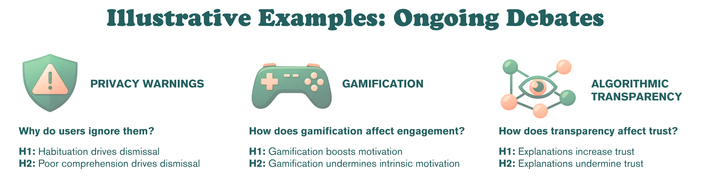

ACM CHI 2026 Extended Abstracts
Towards Adversarial Collaboration in HCI Research
1New York University, Tandon School of Engineering 2Clemson University

The paper proposes Adversarial Collaboration (AC) as a methodological framework for comparing and adjudicating conflicting HCI theories and design approaches. In AC, researchers holding divergent explanations and hypotheses jointly design and conduct experiments to adjudicate disagreements under mutually pre-agreed protocols. While AC has been used successfully in other scientific fields, it has not been systematically applied in HCI.
Why it matters
HCI research encompasses conflicting accounts of how and why people interact with technologies. This can lead to intractable debates and inconsistent theoretical approaches even when relevant data are available.
What the paper proposes
- Methodological framework. The paper proposes AC as a methodological framework for comparing and adjudicating conflicting HCI theories and design approaches.
- Boundary Object theory. The paper argues that HCI is well-positioned to benefit from AC, drawing on Boundary Object theory.
- Illustrative examples. Three experimental designs addressing ongoing HCI debates on privacy behavior, gamification and intrinsic motivation, as well as algorithmic transparency and trust.
- Articulate positionsResearchers who hold opposing explanations articulate their positions.
- Agree on research questions and hypothesesAgreed together, in advance.
- Design experimentsExperiments designed to test the competing hypotheses.
- Conduct them under pre-agreed protocolsCurtails confirmation bias and post-hoc method revision.
- Publish results togetherEach side serves as a check on the other.

assets/projects/adversarial-collaboration/boundary-objects.pngPoster section: Boundary Objects Framework.
How AC can contribute to HCI

assets/projects/adversarial-collaboration/examples.pngPoster section: illustrative examples.
Cite
@inproceedings{nov2026adversarial,
title = {Towards Adversarial Collaboration in HCI Research},
author = {Nov, Oded and Knijnenburg, Bart Piet and Tan, Felicia Fang-Yi},
booktitle = {Extended Abstracts of the 2026 CHI Conference on Human Factors in Computing Systems},
series = {CHI EA '26},
year = {2026},
publisher = {ACM},
doi = {10.1145/3772363.3798609}
}